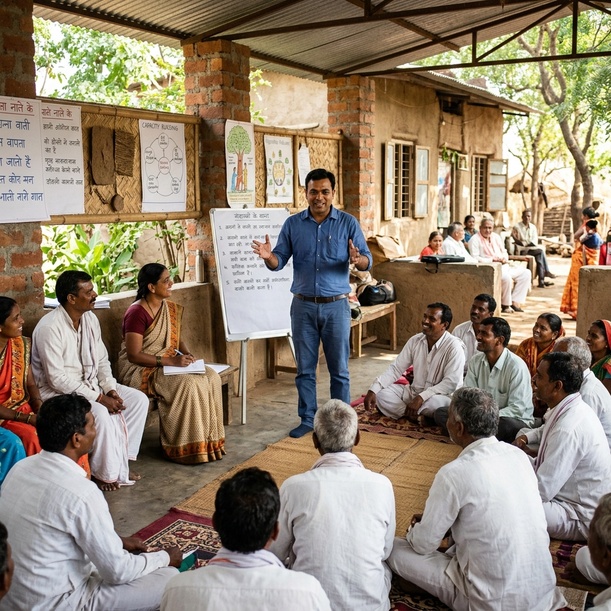
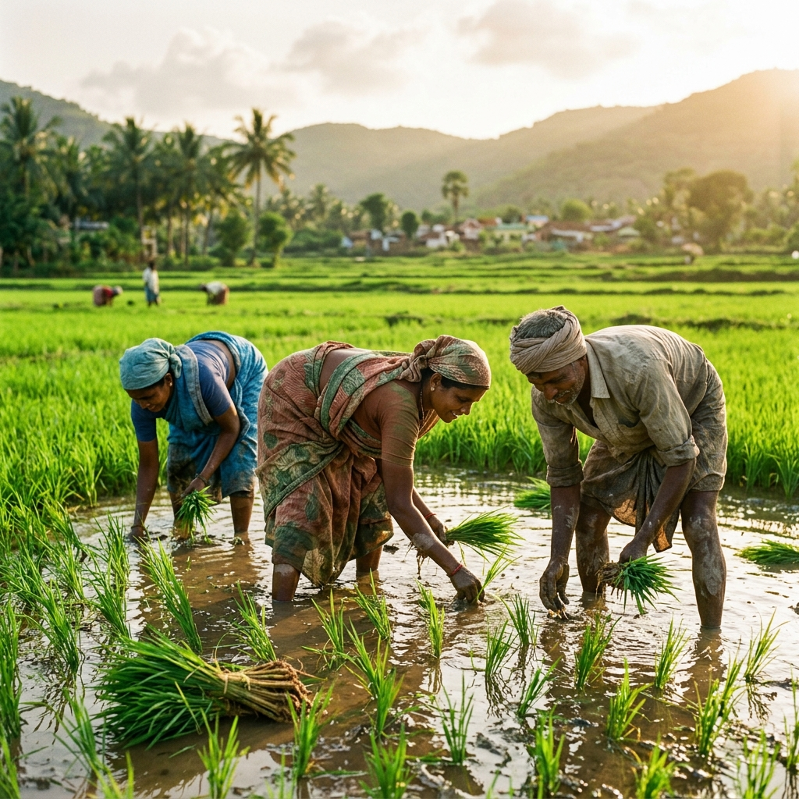
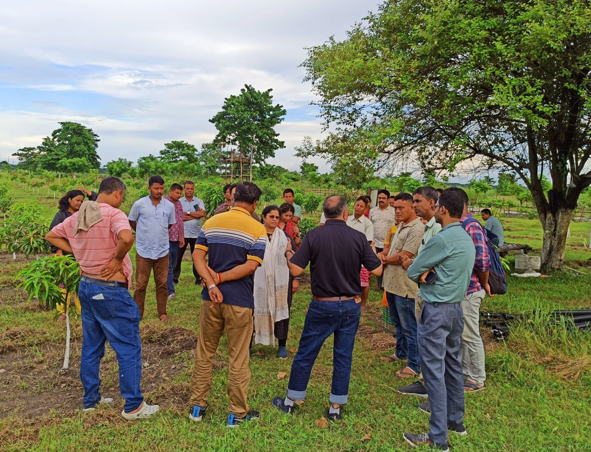
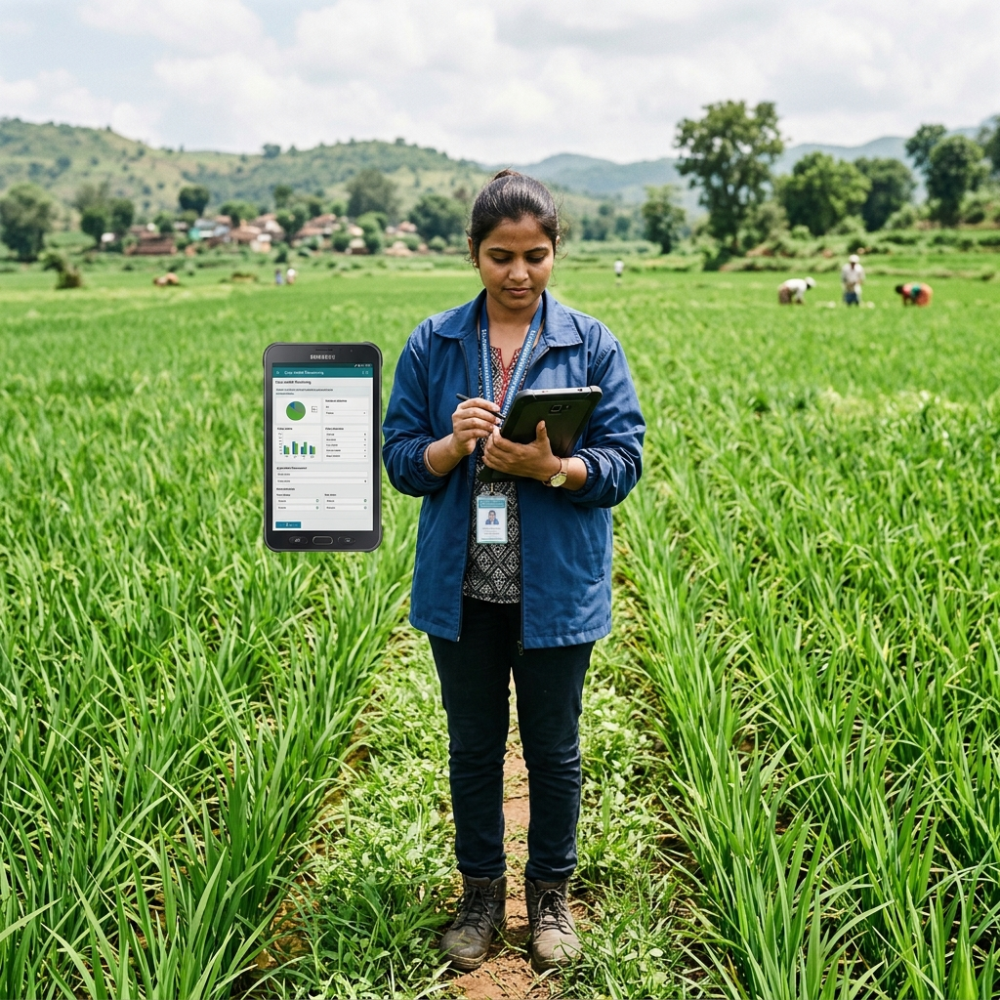
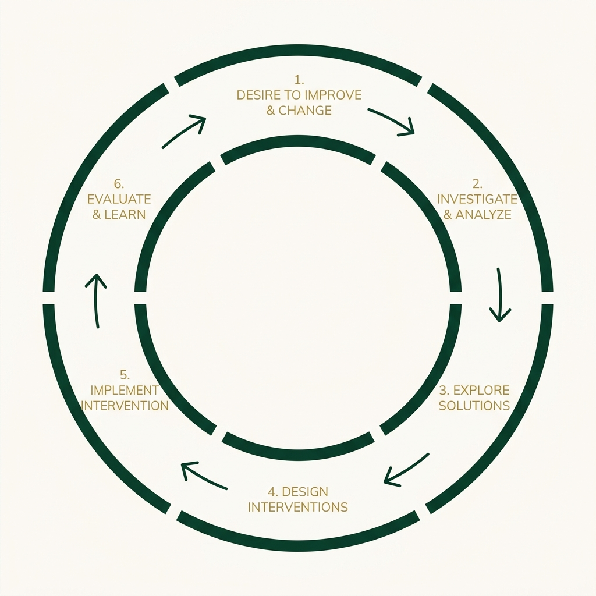

Empowering Teams for Lasting Impact
We deliver tailored professional development and strategic management solutions to streamline project execution and build resilient organizations.
"The land does not belong to us — we belong to the
land.
When we nurture it with
wisdom, it nurtures generations."
We drive sustainable environmental and social change by creating a platform that enables professionals and organisations to realise their potential, achieve measurable impact, and attain excellence through expertise and collaboration.
Our mission is to deliver high-quality advisory and technical support to Rural Development Professionals and Civil Society Organisations by enhancing organisational capacity, implementing effective M&E strategies, strengthening government collaboration, fostering leadership, and facilitating CSR funding partnerships.

Navkarsh Advisory implements our core principles across specialised areas to ensure sustainable impact.

We deliver tailored professional development and strategic management solutions to streamline project execution and build resilient organizations.

Aligning local initiatives with government schemes and CSR mandates to secure sustainable funding and maximize systemic impact.

Comprehensive baseline, endline, and ongoing evaluations to track progress, refine strategies, and ensure interventions deliver value.
Rural development requires understanding local ecosystems, social dynamics, and sustainable practices. We filter out the noise and focus on what truly matters to ensure your projects are seamlessly integrated into the community fabric.
Defining landscapes and uncovering needs through Participatory Rural Appraisal, livelihood assessments, and socio-economic profiling.
Co-creating goals and building intervention architectures, from institution building to climate-resilient technologies.
Launching demonstration plots and running awareness campaigns to implement growth and encourage adoption on the ground.
Ensuring lasting impact via SROI analysis, adaptive management, and building exit strategies for community self-reliance.
We don't just build projects; we build resilient rural ecosystems under the visionary leadership of Dr. Sumit Roy.
With more than three decades of hands-on expertise, Dr. Sumit Roy is a driving force in watershed research, rural development, and livelihood enhancement. Holding a PhD in watershed management, he has dedicated his career to championing the vital role of natural resources in enriching biodiversity and uplifting communities.
Dr. Roy blends academic insight with real-world action, harnessing participatory rural appraisal, GIS, and watershed system dynamics to bring precision to micro-level planning. Rising from Project Coordinator to Executive Director, he has steered ambitious projects like the Lakpati Kisan Smart Village and the BRLF Usharmukti Project, transforming degraded landscapes into thriving ecosystems.
Partnering with Navkarsh opens doors to stronger relationships with funding agencies. Dr. Roy has built trusted alliances with Axis Bank Foundation, Ford Foundation, WHH, GIZ, Azim Premji Foundation, HUF, HDFC, WABAG, Cummins, Tata Trusts, DST, and UNDP. His expertise ensures expectations are exceeded through compelling proposals and cutting-edge technology integration.
From field operations to executive leadership, Dr. Roy has mastered organizational problem-solving. At BRLF, he pioneered State-Level PMUs and led the National Knowledge Vertical on Participatory Groundwater Management, creating Water Security Plans across 21 locations. Navkarsh provides expert guidance across all aspects of organizational development to empower CSOs.
For over 15 years, Navkarsh Advisory has blended hands-on fieldwork with bold strategic thinking. We nurture talent, having championed the growth of over 500 project staff and 50 professionals into senior leadership.
The "Roy's Method" weaves together technical mastery and inspiring leadership, empowering professionals to reach their goals while igniting a passion for Rural Development.

Hear from the professionals, organizations, and communities whose trajectories have been transformed through Navkarsh Advisory's expertise.